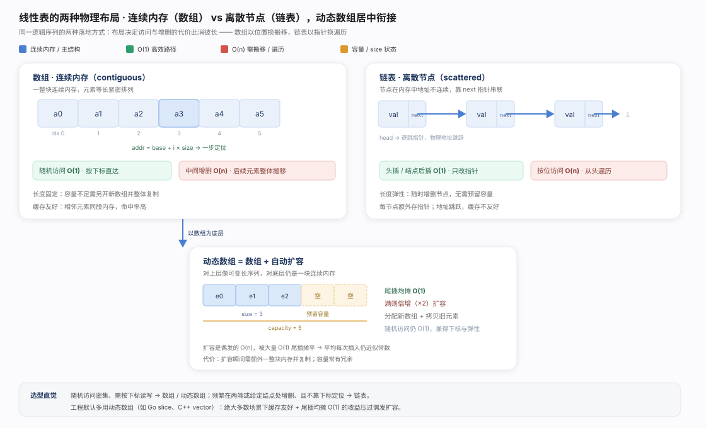
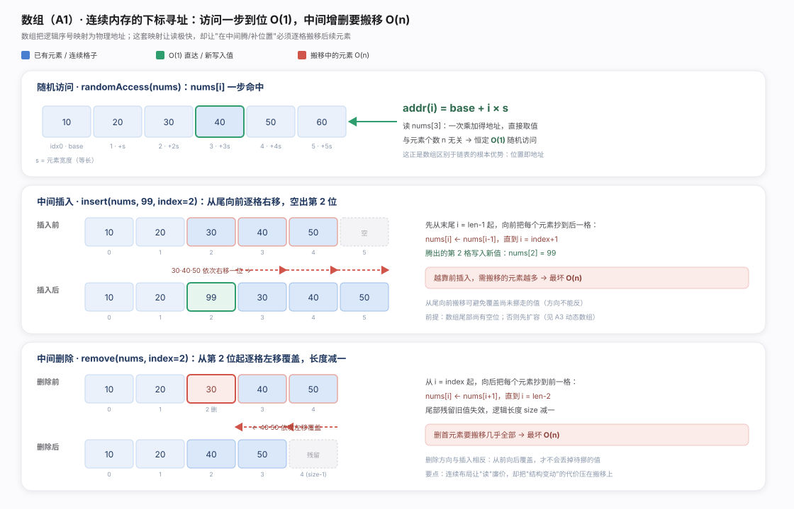
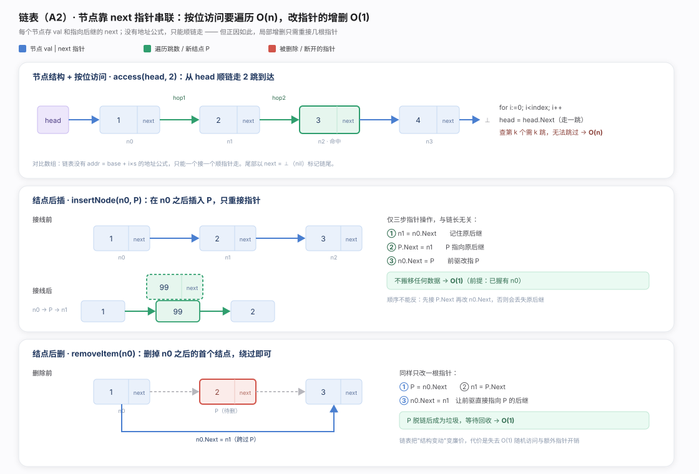
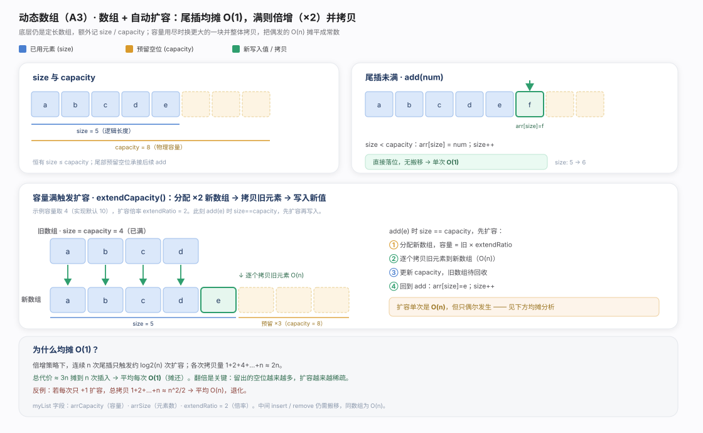
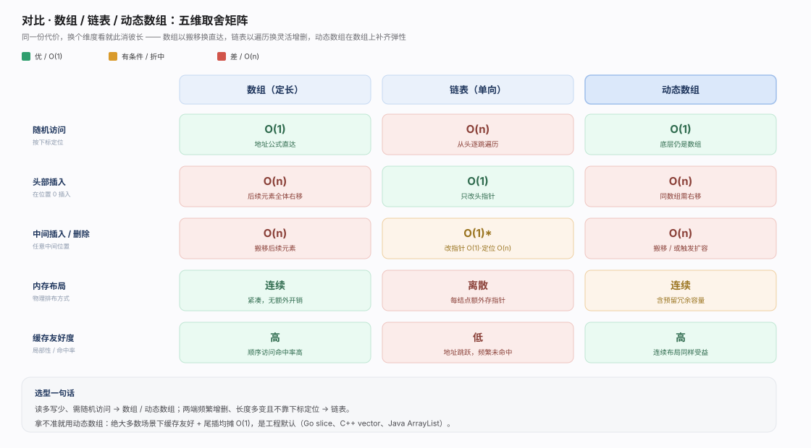

线性表落地只有两条路线：元素挨着放（数组，下标经 addr = base + i × size 直达，O(1) 随机访问但增删要搬移 O(n)），或用 next 指针串起来（链表，按位遍历 O(n) 但握住节点后增删只重接指针 O(1)）。动态数组是站在数组一侧的折中：连续内存 + 倍增扩容，兼得随机访问与长度弹性，是各语言默认序列容器。

数组：连续布局 + 等长元素使任意下标一次乘加算出地址，故 O(1) 随机访问。代价也源于连续——insert 须从尾向前右移、remove 从前向后左移（方向反了会覆盖未挪走的值），最坏 O(n)。本质权衡：读廉价、结构变动贵。
package chapter_array_and_linkedlist
import (
"math/rand"
)
/* 随机访问元素 */
func randomAccess(nums []int) (randomNum int) {
// 在区间 [0, nums.length) 中随机抽取一个数字
randomIndex := rand.Intn(len(nums))
// 获取并返回随机元素
randomNum = nums[randomIndex]
return
}
/* 扩展数组长度 */
func extend(nums []int, enlarge int) []int {
// 初始化一个扩展长度后的数组
res := make([]int, len(nums)+enlarge)
// 将原数组中的所有元素复制到新数组
for i, num := range nums {
res[i] = num
}
// 返回扩展后的新数组
return res
}
/* 在数组的索引 index 处插入元素 num */
func insert(nums []int, num int, index int) {
// 把索引 index 以及之后的所有元素向后移动一位
for i := len(nums) - 1; i > index; i-- {
nums[i] = nums[i-1]
}
// 将 num 赋给 index 处的元素
nums[index] = num
}
/* 删除索引 index 处的元素 */
func remove(nums []int, index int) {
// 把索引 index 之后的所有元素向前移动一位
for i := index; i < len(nums)-1; i++ {
nums[i] = nums[i+1]
}
}
/* 遍历数组 */
func traverse(nums []int) {
count := 0
// 通过索引遍历数组
for i := 0; i < len(nums); i++ {
count += nums[i]
}
count = 0
// 直接遍历数组元素
for _, num := range nums {
count += num
}
// 同时遍历数据索引和元素
for i, num := range nums {
count += nums[i]
count += num
}
}
/* 在数组中查找指定元素 */
func find(nums []int, target int) (index int) {
index = -1
for i := 0; i < len(nums); i++ {
if nums[i] == target {
index = i
break
}
}
return
}
链表：无地址公式，按位访问只能顺 next 逐跳，O(n)；但结构靠指针维系，故局部增删仅重接几根指针 O(1)（插入三步顺序不能反，否则丢失后继）。关键前提是已握有前驱节点，否则仍需 O(n) 定位；此外指针跳跃对 CPU 缓存不友好。
package chapter_array_and_linkedlist
import (
. "helloalgo/pkg"
)
/* 在链表的节点 n0 之后插入节点 P */
func insertNode(n0 *ListNode, P *ListNode) {
n1 := n0.Next
P.Next = n1
n0.Next = P
}
/* 删除链表的节点 n0 之后的首个节点 */
func removeItem(n0 *ListNode) {
if n0.Next == nil {
return
}
// n0 -> P -> n1
P := n0.Next
n1 := P.Next
n0.Next = n1
}
/* 访问链表中索引为 index 的节点 */
func access(head *ListNode, index int) *ListNode {
for i := 0; i < index; i++ {
if head == nil {
return nil
}
head = head.Next
}
return head
}
/* 在链表中查找值为 target 的首个节点 */
func findNode(head *ListNode, target int) int {
index := 0
for head != nil {
if head.Val == target {
return index
}
head = head.Next
index++
}
return -1
}
动态数组：size < capacity 时尾插直接落位 O(1)，满则触发 extendCapacity 分配 ×2 新数组并拷贝旧元素（单次 O(n)）。倍增策略使 n 次尾插累计拷贝 ≈ 2n，摊还后平均 O(1)；若改为每次 +1 扩容则累计 ≈ n²/2 退化为 O(n)。代价是扩容瞬时需整块新内存且容量有冗余。
package chapter_array_and_linkedlist
/* 列表类 */
type myList struct {
arrCapacity int
arr []int
arrSize int
extendRatio int
}
/* 构造函数 */
func newMyList() *myList {
return &myList{
arrCapacity: 10, // 列表容量
arr: make([]int, 10), // 数组（存储列表元素）
arrSize: 0, // 列表长度（当前元素数量）
extendRatio: 2, // 每次列表扩容的倍数
}
}
/* 获取列表长度（当前元素数量） */
func (l *myList) size() int {
return l.arrSize
}
/* 获取列表容量 */
func (l *myList) capacity() int {
return l.arrCapacity
}
/* 访问元素 */
func (l *myList) get(index int) int {
// 索引如果越界，则抛出异常，下同
if index < 0 || index >= l.arrSize {
panic("索引越界")
}
return l.arr[index]
}
/* 更新元素 */
func (l *myList) set(num, index int) {
if index < 0 || index >= l.arrSize {
panic("索引越界")
}
l.arr[index] = num
}
/* 在尾部添加元素 */
func (l *myList) add(num int) {
// 元素数量超出容量时，触发扩容机制
if l.arrSize == l.arrCapacity {
l.extendCapacity()
}
l.arr[l.arrSize] = num
// 更新元素数量
l.arrSize++
}
/* 在中间插入元素 */
func (l *myList) insert(num, index int) {
if index < 0 || index >= l.arrSize {
panic("索引越界")
}
// 元素数量超出容量时，触发扩容机制
if l.arrSize == l.arrCapacity {
l.extendCapacity()
}
// 将索引 index 以及之后的元素都向后移动一位
for j := l.arrSize - 1; j >= index; j-- {
l.arr[j+1] = l.arr[j]
}
l.arr[index] = num
// 更新元素数量
l.arrSize++
}
/* 删除元素 */
func (l *myList) remove(index int) int {
if index < 0 || index >= l.arrSize {
panic("索引越界")
}
num := l.arr[index]
// 将索引 index 之后的元素都向前移动一位
for j := index; j < l.arrSize-1; j++ {
l.arr[j] = l.arr[j+1]
}
// 更新元素数量
l.arrSize--
// 返回被删除的元素
return num
}
/* 列表扩容 */
func (l *myList) extendCapacity() {
// 新建一个长度为原数组 extendRatio 倍的新数组，并将原数组复制到新数组
l.arr = append(l.arr, make([]int, l.arrCapacity*(l.extendRatio-1))...)
// 更新列表容量
l.arrCapacity = len(l.arr)
}
/* 返回有效长度的列表 */
func (l *myList) toArray() []int {
// 仅转换有效长度范围内的列表元素
return l.arr[:l.arrSize]
}
按下标随机访问、读多写少选数组/动态数组；两端频繁增删、不依赖下标定位选链表；拿不准用动态数组——缓存友好与均摊 O(1) 尾插压过偶发扩容成本。详见对比图。